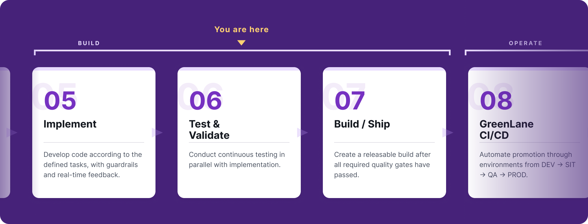

Accept test evidence

What are you reviewing?
You are reviewing the output of two agents. The API Testing agent (API Tester in the pilot steps) writes its evidence to output/<RUN_ID>/api-tests/attempt-<n>/, and the Functional Testing agent (Functional Automation Test in the pilot steps) writes to output/<RUN_ID>/functional-tests/attempt-<n>/.
The Quality Engineer reviews coverage and results and retains the quality decision. The agent produces evidence, but it does not decide whether that evidence is good enough.
Before reading any results, check which of three outcomes you are looking at, because each one is judged differently.
- Executed: Tests ran, and every in scope API or UI behaviour is reported as tested, blocked or skipped with a reason.
- Not applicable: The spec declares
API In Scope: NOorUI In Scope: NO, and the report records that evidence with zero APIs, components and cases. - Blocked: The spec was missing, did not declare scope, or did not give enough detail to identify what to test. The agent should stop rather than substitute endpoints or screens of its own.